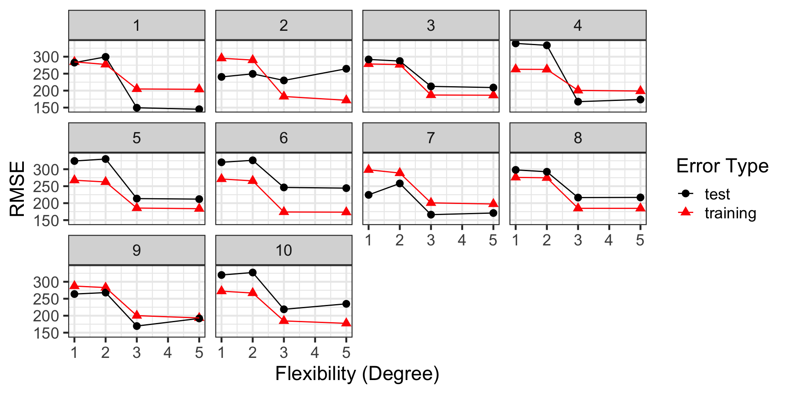

August 16, 2024
The appropriate level of flexibility is third-degree, since this is where test error “bottoms out”
| model | degree | training_rsq | training_rmse | test_rsq | test_rmse |
|---|---|---|---|---|---|
| cubic | 3 | 0.6796513 | 189.1408 | 0.5509124 | 206.3521 |
| 5th-Order | 5 | 0.6918323 | 185.5100 | 0.5179021 | 213.5337 |
| 11th-order | 11 | 0.7240143 | 175.5566 | 0.4412691 | 224.7953 |
| straight-line | 1 | 0.3134716 | 276.8874 | 0.0789754 | 300.8079 |
| quadratic | 2 | 0.3398392 | 271.5181 | 0.0738314 | 307.3919 |
We see that the test RMSE for our third degree model is 206.35, so we expect our model to make accurate predictions to within about \(\pm\) 412.7
Everything seems great!
…except…
With a New Training Set:
| model | degree | training_rsq | training_rmse | test_rsq | test_rmse |
|---|---|---|---|---|---|
| 5th-Order | 5 | 0.5915110 | 186.6815 | 0.5564216 | 209.8714 |
| cubic | 3 | 0.5903834 | 186.9389 | 0.5576674 | 209.9788 |
| 11th-order | 11 | 0.6094996 | 182.5247 | 0.5599005 | 211.2643 |
| straight-line | 1 | 0.2178155 | 258.3245 | 0.2860728 | 269.5203 |
| quadratic | 2 | 0.2526268 | 252.5107 | 0.2708088 | 272.3012 |
And Another One:
| model | degree | training_rsq | training_rmse | test_rsq | test_rmse |
|---|---|---|---|---|---|
| cubic | 3 | 0.7098687 | 194.1079 | 0.4358314 | 206.9168 |
| 5th-Order | 5 | 0.7251158 | 188.9386 | 0.3975477 | 213.1370 |
| 11th-order | 11 | 0.7341144 | 185.8204 | 0.3143837 | 229.3214 |
| quadratic | 2 | 0.2969250 | 302.1668 | 0.0684807 | 266.1822 |
| straight-line | 1 | 0.1448967 | 333.2385 | 0.0026038 | 294.5961 |

We fairly reliably identify the appropriate level of flexibility
| flexibility | trial | type | rsq | rmse |
|---|---|---|---|---|
| 3 | 1 | test | 0.7452874 | 149.4978 |
| 3 | 2 | test | 0.3951219 | 230.0432 |
| 3 | 3 | test | 0.5683425 | 212.4789 |
| 3 | 4 | test | 0.8285252 | 167.4943 |
| 3 | 5 | test | 0.6050025 | 213.4999 |
| 3 | 6 | test | 0.4591706 | 246.3405 |
| 3 | 7 | test | 0.6534396 | 166.1391 |
| 3 | 8 | test | 0.5846136 | 216.4419 |
| 3 | 9 | test | 0.6994682 | 169.4707 |
| 3 | 10 | test | 0.2591332 | 218.8259 |
…but those performance estimates are wild!
Depending on the test set, we could be claiming model predictions accurate to within \(\pm 299\) or \(\pm 492.68\) – that’s a big difference
We thought we were doing the right thing with our training/test/validation set approach all along, but
this approach left us very vulnerable to the observations which, by chance, fell into our training and validation/test sets
Different training data can lead to different models (beyond even just differences in estimated coefficients) and result in quite different performance expectations
We need a framework that leaves us less susceptible to random chance
Randomly split available data into training and validation sets
Randomly split the training set into \(k\) folds
For each individual fold…
Average your \(k\) performance estimates together
The resulting estimate is our cross-validation performance estimate, which is much more stable than a performance estimate from a single model on a single hold-out set
The following observations are worth calling out
Even when you are using cross-validation, you should initially split your data into a training and final testing set
Common choices for \(k\) in \(k\)-fold cross-validation are \(k = 5\) and \(k = 10\)
A special case of \(k\)-fold cross-validation sets \(k = n\) so that each observation sits in its own fold – this is referred to as leave one out cross-validation (LOOCV)
Since we are training and assessing multiple models, cross-validation is a more computationally intensive approach than we’ve taken thus far
Cross-validation results in performance estimates, but does not result in a fitted model!
{tidymodels}Largely, things will remain the same – we’ll start with a model specification, then declare a recipe, and package the model and recipe together into a workflow
There will be three main differences though
After we split our data into training and test sets, we’ll split our training set into folds using the vfold_cv() function
Rather than using the fit() function to fit our model to the training data, we’ll use fit_resamples() to fit and assess along each fold (resample)
The result of fit_resamples() will be a set of performance metrics calculated on each fold – we’ll obtain these using the collect_metrics() function
Let’s see this in action with our familiar penguins data
{tidymodels}We’ll build a fairly complex model that includes all of the available predictors
It also includes interactions between both species and island with flipper length and bill length as well as between bill length and bill depth
penguins_split <- initial_split(penguins, prop = 0.9)
penguins_train <- training(penguins_split)
penguins_test <- testing(penguins_split)
penguins_folds <- vfold_cv(penguins_train, v = 10)
lr_spec <- linear_reg() %>%
set_engine("lm")
lr_rec <- recipe(body_mass_g ~ ., data = penguins_train) %>%
step_dummy(species) %>%
step_dummy(island) %>%
step_interact(~ starts_with("species"):contains("length")) %>%
step_interact(~ bill_length_mm:bill_depth_mm)
lr_wf <- workflow() %>%
add_model(lr_spec) %>%
add_recipe(lr_rec)
lr_results <- lr_wf %>%
fit_resamples(penguins_folds) {tidymodels}Now that we’ve run cross-validation, it’s time to collect the results!
| .metric | .estimator | mean | n | std_err | .config |
|---|---|---|---|---|---|
| rmse | standard | 287.6428273 | 10 | 12.980473 | Preprocessor1_Model1 |
| rsq | standard | 0.8622995 | 10 | 0.021012 | Preprocessor1_Model1 |
We see that the cross-validation RMSE is about 287.64, with a standard error of about 12.98, so that we are confident that our model will predict penguin body masses accurate to within a conservative estimate of about \(\pm 2\cdot\left(\right.\) 287.64 \(\pm 2\cdot\left(\right.\) 12.98\(\left.\left.\right)\right)\)g, which is the same as \(\pm\) 627.21g
{tidymodels}We can also see the results on each fold – I’ll do a bit of extra manipulation (not shown here) so that we can see both RMSE and \(R^2\) metrics side-by-side
| id | rmse | rsq |
|---|---|---|
| Fold01 | 362.4834 | 0.7540292 |
| Fold02 | 274.2758 | 0.8794673 |
| Fold03 | 302.1292 | 0.7981302 |
| Fold04 | 334.4922 | 0.7574754 |
| Fold05 | 242.2274 | 0.9157606 |
| Fold06 | 261.8536 | 0.9053921 |
| Fold07 | 312.0557 | 0.9015039 |
| Fold08 | 296.0174 | 0.8761237 |
| Fold09 | 241.9070 | 0.9119503 |
| Fold10 | 248.9867 | 0.9231618 |
The training/test/validation set approach leaves us too vulnerable to randomness
We split our training data into folds, using each fold once as a hold-out set, training a model on the remaining folds, and assessing the model on the hold-out fold to obtain multiple models and multiple performance assessments
In {tidymodels}, we
vfold_cv() on our training data to create cross-validation foldsfit_resamples() on our folds, instead of fit() on the training data, to run the cross-validation procedure and obtain performance metrics on each foldcollect_metrics() to access the cross-validation performance measuresLet’s try out cross-validation on the ames housing data that we were using earlier this semester